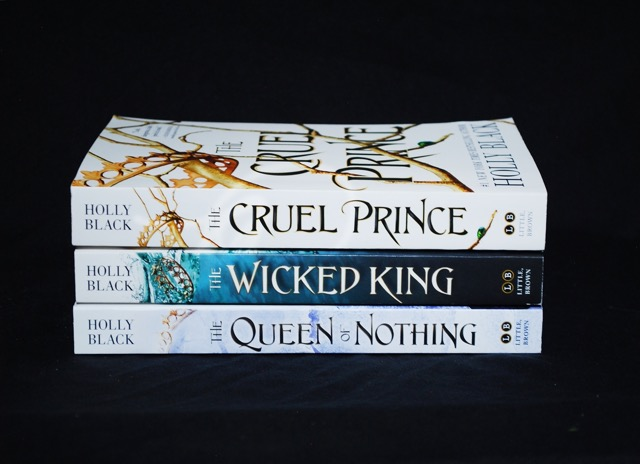
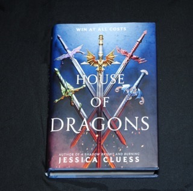

Login/Sign In

The Folk of the Air
The Folk of the Air is a young adult fantasy book series by Holly Black, published by Little Brown Books for Young Readers. The story follows the journey of mortal girl Jude Duarte and faerie prince Cardan Greenbriar as they navigate the world of hate, betrayal, and contempt along with feelings for each other
Famous Read

Song of Silver Flame Like Night
In a fallen kingdom, one girl carries the key to its forgotten past- and the demons that sleep at its heart... Once, Lan had a different name. Now, she goes by the one the Elantian colonizers gave her when they invaded her kingdom, killed her mother, and outlawed her people's magic.

House of Dragons
In House of Dragons, Five Second-Borns Find Themselves in an Unexpected Situation. With the emperor dead, the five royal families of Etrusia prepare to send their first-borns and their dragon companions to compete for the open throne

A Day Of Fallen Night
“A Day of Fallen Night,” a striking standalone prequel to “Priory,” interweaves the stories of three women — Tunuva, Glorian, and Dumai — from three wildly different fantastical cultures. Yet they are united through their devotion to their loved ones and quests to hunt down the demonic wyrms which threaten their world

The Poppy War
The Poppy War is the story of passionate yet ruthless Fang Runin, also known as Rin, who grows up poor, orphaned by a previous war. But she studies and gets into an elite military academy, and develops a gift for shamanism that lets her call upon the fire powers of a vengeful Phoenix god.

Caraval
Welcome, welcome to Caraval―Stephanie Garber's sweeping tale of two sisters who escape their ruthless father when they enter the dangerous intrigue of a legendary game. Scarlett has never left the tiny island where she and her beloved sister, Tella, live with their powerful, and cruel, father.

SkyHunter
Skyhunter by Marie Lu. This novel is about Talin, a striker for Mara, the last free nation as she fights to keep the Karensa Federation away from her home. The Federation creates Ghosts by taking humans and changing the way they look and act.Nov

Carry On
Image result for what is carry on about The story follows the final year of magical schooling for Simon Snow, the "Chosen One" of the Magical world, prophesied to defeat the Insidious Humdrum, an evil force that has been wreaking havoc on the World of Mages for years.

The Darkness Outside Us
Two boys, alone in space. After the first settler on Titan trips her distress signal, neither remaining country on Earth can afford to scramble a rescue of its own, and so two sworn enemies are installed in the same spaceship. Ambrose wakes up on the Coordinated Endeavor, with no memory of a launch.

In Deep Waters
A young prince must rely on a mysterious stranger to save him when he is kidnapped during his coming-of-age tour in this swoony adventure that is The Gentleman's Guide to Vice and Virtue meets Pirates of the Caribbean. Prince Tal has long awaited his coming-of-age tour.

The Wish
The novel follows Maggie Dawes throughout 2013, the last year of her life. She is a famous photographer diagnosed with terminal cancer, and when a young man named Mark comes to her gallery in search of a job, Maggie finds a confidante in him. She begins to reflect upon and tell her story before it's too late.

Blood Metal Bone
The story revolves around Sonara, who has been sentenced to execution for her brother's murder. Instead, she becomes a Shadowblood, a being with magical powers, banished from society. Sonara becomes a thief known as the Devil of the Deadlands.

From Blood To Ash
From Blood and Ash follows Poppy, who was chosen to be the Maiden. The Maiden must live a solitary life until she is given to the gods at her Ascension, a fate Poppy dreads, despite it being the highest honor

Scythe
Scythe is a dystopian young adult novel by Neal Shusterman, and it tells the tale of a futuristic society in which all forms of death have been eradicated, and the only way a human can die is by being 'gleaned', a word which is synonymous with murder.

A Touch Of Darkness
A Touch of Darkness is the first book in the Hades and Persephone series by Scarlett St. Clair. It's a loose retelling of the abduction of Persephone by the Lord of the Underworld in Greek Mythology, re-written in an urban, contemporary setting.